最全Pycharm教程（29）——再探IDE，速成手册
1、准备工作
（1）确认安装了Python解释器，版本2.4到3.4均可。
（2）注意Pycharm有两个发布版本：社区版和专业版，详见 Edition Comparison Matrix
2、初始化安装
第一次安装Pycharm时，安装程序会咨询你几个重要问题：
（1）是否已经预先保存了设置信息（例如早期版本的配置信息）
（2）许可证信息
（3）选择何种快捷键配置和背景主题
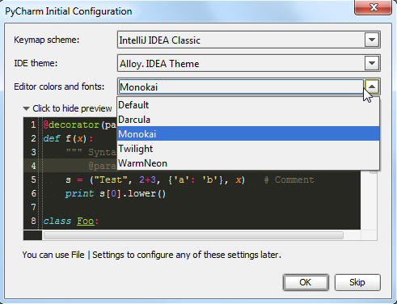
注意这里Pycharm预设了好几种快捷键方案，有诸如Eclipse或者Visual Studio的，也有针对Emacs粉丝量身打造的GNOME、KDE等等。具体参见设置对话框中Keymap page页的快捷键方案列表。
对于Vim专业户，PyCharm建议使用IdeaVim plugin插件。同样对于那些习惯Emacs开发的用户，Python同样提供了相关外部插件 use it as an external editor。
当然我们可以在后期对初始设置进行更改，详见documentation以及以下两篇教程：
3、欢迎界面设置
如果你第一次使用Pycharm（尚未创建工程），则你会首先进入欢迎界面 Welcome screen。单击Configure，Pycharm会提示你来核实当前有关环境、插件、导入导出以及其他相关的外部配置。再次单击Configure，进入Settings/Preferences dialog配置对话框，注意这里对话框标题默认为“Default Project”：
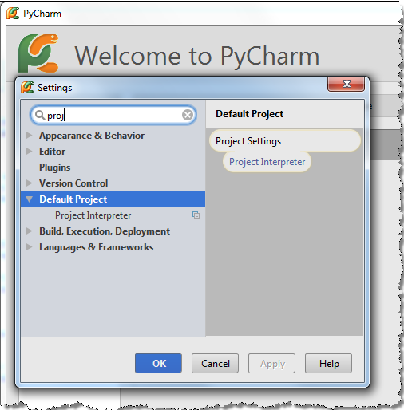
这就意味着每次你创建新的工程时都会默认使用如上配置。假设你希望所有新创建的工程都使用相同的解释器，可以在Default Project settings中设置 define such an interpreter：
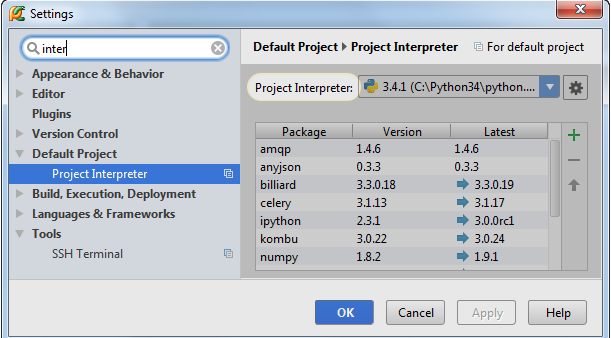
这里同样可以设置默认的编辑环境。例如你希望一直显示代码的行号，则需要在设置对话框中，展开Editor节点，在 Appearance page页面将“Show line numbers”所对应的复选框勾选：
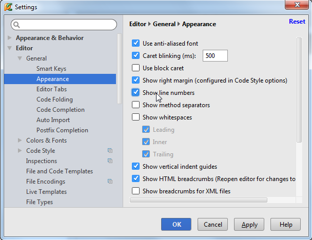
接下来假设你希望使用特定的颜色主题，OK，选择基本主题，拷贝，然后改变配色方案即可（系统预设的颜色主题是不可更改的）。
当然字体大小也是可以改变的。这些都需要在Colors and Fonts settings页面进行操作。同样的你需要先创建一个主题备份，定义编辑器的字体大小，这些设置会作用于编辑器字体，但不会对其他控件区域的字体造成改变。
我们可以在预览窗口预览更改后的效果：
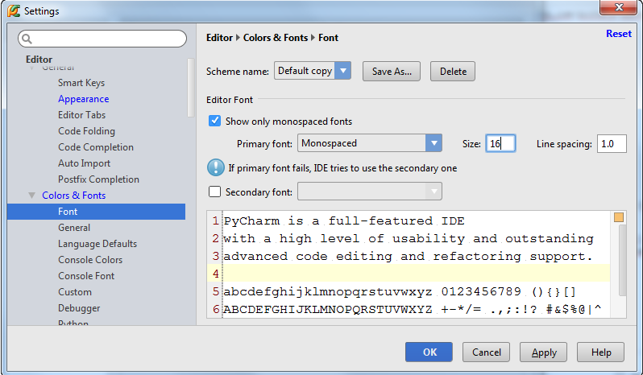
更多详细的外观主题设置参见教程What my PyCharm looks like。
当然在一个项目创建完成后，我们仍可以随时对其进行更改，这将在下面的章节What my PyCharm looks like进行讨论。
最后，你可以选择隐藏/显示用户界面的一些控件：工具栏按钮、菜单栏按钮、主工具栏按钮等。Pycharm还允许你选择视图模式，详见：
4、工程
你在Pycharm中所做的任何操作都应该属于某个工程。最有意思的是Pycharm的工程管理器，它允许我们在一个框架下打开多个工程open multiple projects in one frame。当你创建了一个新的工程（File →New Project）或者打开一个现有的工程（File →Open），Pycharm会咨询你用哪种方式打开：单独在一个新窗口，还是添加到当前窗口。
你可以根据需要在一个窗口中打开多个工程。此时第一个工程被认为是主工程，其他工程的符号在主工程中均可用。
尝试创建一个新的工程作为练习，并输入一些代码。详见Getting started with PyCharm，重点参见 Creating a simple project部分。
5、工程类型
Pycharm提供了各种各样的工程类型：Django、Flask、Pyramid、web2py等等。创建工程时根据需要在列表中选择对应的工程类型。
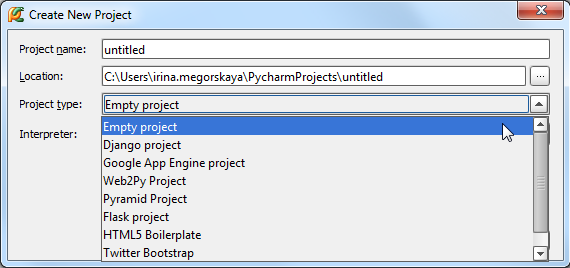
可见Pycahrm支持所有的Python主流框架，并会帮助生成对应的文件结构以及必要组件，详见：
6、开始
此时工程已经创建完毕，在开始工作之前，按两下Shift键，会弹出一个窗口，供我们查找和跳转：
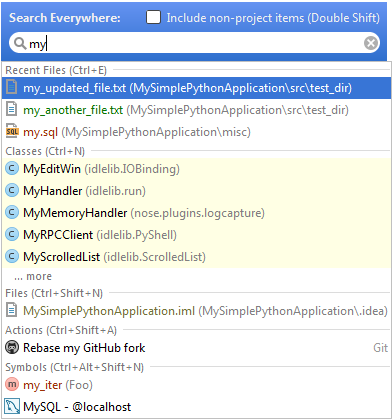
如你所见，在这里可以搜索Pycharm的任何信息，命令、设置信息、文件信息、控件等等。这只是Pycharm搜索导航功能的一部分。
7、工程的私人订制
单击主工具栏的设置按钮进入设置对话框，Settings/Preferences dialog box，在这里可以改变项目结构、控件安装、调节开发环境。
一些设置是主要针对具体工程的，如工程解释器类型、配置属性、文件颜色等。其他例如编辑框设置、快捷键、生成模板等则是针对整体的开发环境，无需依赖某个具体工程。
8、工程解释器
Python解释器时必需的，若解释器配置失效，Pycharm会给出如下错误提示：
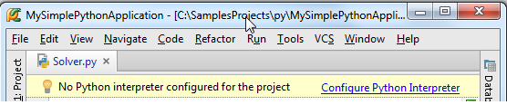
在Pycharm你可以同时定义若干解释器，然后选择一个应用于工程中。
总之，必须明确告诉Pycharm使用哪个解释器以方便其use a different interpreter for each project：
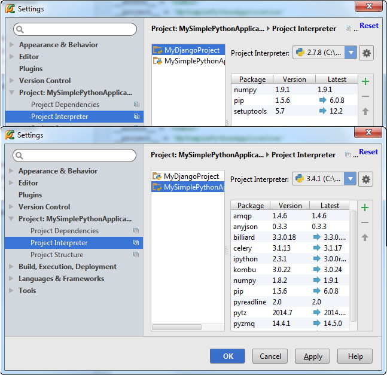
Pycharm解释器类型包括以下几种：
9、本地解释器
最直接的使用解释器的方式，下载Python解释器，安装到本地，执行……，详见 tutorial或者product documentation。
10、远程解释器
Pycharm允许使用远程解释器，例如通过可靠的服务器来完成。此前Pycharm需要先通过 SSH connection或者 Vagrant box来进行远程解释器配置，详见 Configuring interpreters with PyCharm。
11、虚拟环境
重要性？假设你正在使用Django 1.6编写一个工程，同时你需要支持另外一个要求使用Django 1.2的工程，此时你需要通过某种手段来保证你操作环境的安全性和一致性，也就是通过一个工具创建一个Python编译器的拷贝。具体如何创建虚拟环境参见documentation以及tutorial。
12、第三方库及其路径
如论哪个版本的解释器，Pycharm能够帮助我们安装和更新一些必需的第三方库。例如当Pycharm检测到一些缺失的或者待更新的第三方库之后，会提示我们进行安装和更新：
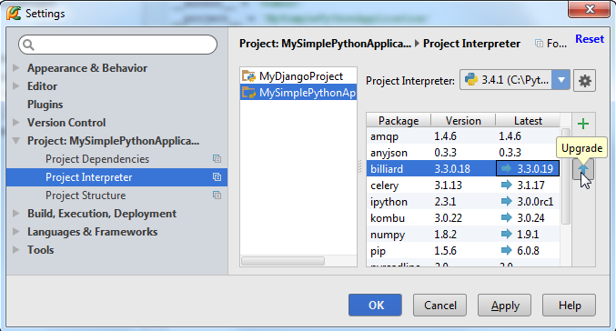
对于路径的更新也同样适用。如果安装或更新了库，建议重新扫描一下Python的安装目录。单击按钮，选择more。然后在工程解释器设置对话框中，选择要浏览的解释器，单击按钮，在解释器路径对话框中，单击按钮进行库更新。
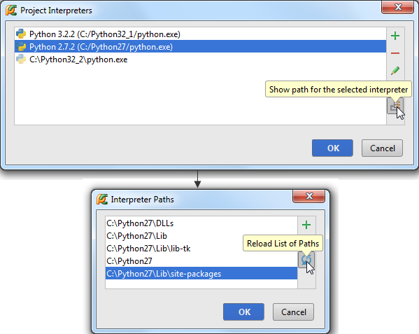
其他详细信息参见 product documentation
13、VCS（版本控制系统）
Pycharm帮助我们对已有工程进行版本控制。
当然我们可以对其进行微调。在Settings/Preferences dialog对话框中单击Version Control节点（Project Settings→Version Control），默认情况下只能看到工程的根目录，但是你可以将你的应用分割成更小的块进行管理。
在Settings/Preferences dialog对话框中，更改的命令行为将会应用于所有的版本控制系统：创建/删除文件的确认信息、后台控制方式等等。
更多内容参见：
也可以参考Pycharm文档：
14、文件颜色
你的工程中可能包含若干工程，每个工程目录下的文件名都可能相同（例如init.py, models.py, tests.py, views.py等），当它们同时在编辑器中打开时，为了方便区分其各自归属于哪个工程，Pycahrm通过其标签颜色来进行标记（Settings/Preferences→Project Settings→File Colors）。尝试将你的工程分片，然后分别制定其文件配色方案。
更多信息参见 Configuring scopes and file colors
15、IDE和编辑器
IDE的职责在于改善编程环境，优化视觉体验，提高操作效率。因此Pycharm允许我们对IDE以及编辑器进行各种各样的私人订制，如快捷键、滚动条、高亮显示等等。详情参见
以上这些设置都是在设置对话框中完成的Settings/Preferences dialog。单击主工具栏的设置按钮，打开对应页面进行设置即可，推荐在优先在这些页面中作调整： Appearance、Keymap。
16、外观
在Settings/Preferences→Appearance and Behavior→Appearance页面中定制外观。单击Look and feel下拉列表，选择喜欢的主题。这里单击Apply按钮预览选中主题效果，无需关闭对话框，直到满意为止。
更多信息参见How do I choose look and feel for my PyCharm?以及product documentation。
17、编辑器
所有编辑器相关设置都在 Editor节点下（Settings/Preferences→Editor），包括配色方案、字体、高亮显示机制等等。并且可以在预览窗口快速预览所作的更改。
更多信息参见How do I change color scheme of the editor以及product documentation。
18、快捷键
快捷键的设置取决于你的操作习惯。
通过Settings/Preferences→Appearance and Behavior→Keymap打开快捷键设置窗口，选择对应的快捷键方案，设置特定的快捷键组合。
这里有一个强力的快捷键Ctrl + Back Quote，能够在不同主题间切换而无需打开设置对话框。
更多信息参见Configuring keyboard schemes以及product documentation。
19、外部编辑器
Pycahrm可以借助外部插件来转换为其他编辑器形式，例如Emacs等，详见 Using Emacs as an external editor。
20、后台任务
Pycharm对一些耗时较长的任务会给出进度条，我们可以将其隐藏在后台（仍保持可见），详见 Working with Background Tasks。
21、代码智能
Pycharm在编写代码过程中会给出一些方便的智能提示，主要体现在：
（1）拼写提示（Ctrl+Space）code completion
（2）使用生成模板 Creating and applying live templates (code snippets)， product documentation
（3）代码快速定型Quick fixes and intention actions once more和 product documentation
22、宏的使用
使用宏能够简化编辑过程，详见Using macros和 documentation。
23、多文件工作环境
默认情况下，Pycharm通过单独编辑选项卡来打开文件：

我们可以手动交换这些选项卡的顺序、固定或者非固定、靠边显示、拆分等等：
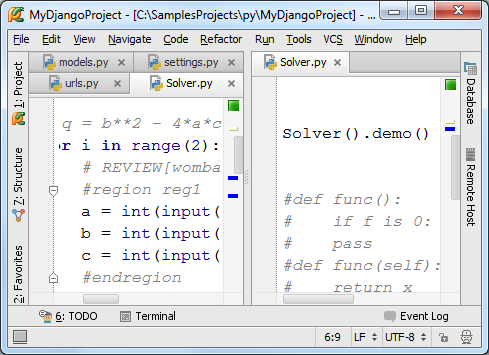
详见 section Managing editor tabs以及 tutorial。
24、显示代码分析
Pycharm会给出各种各样的提示来帮助你发现并改正代码中的错误。
首先，在输入代码时它会以红色波浪线标记所有的语法错误，同时在右槽对应行给出标记，在下方状态来显示错误信息，鼠标悬停在对应标记上时也会显示简要的错误提示信息：
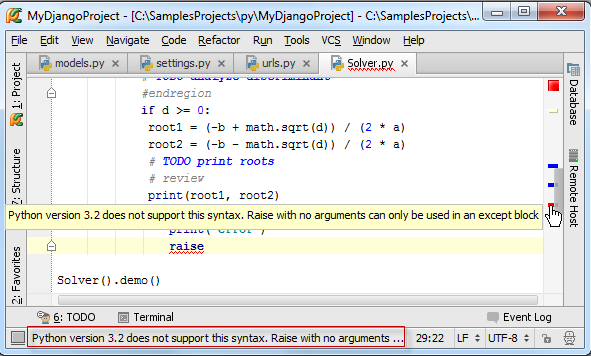
同时Pycharm还会通过在左侧显示红色、黄色灯泡图标来指示错误和警告。
接下来是静态代码分析，也就是代码检查，并在右槽给出对应标记。红色代表错误，黄色代表警告，右槽顶部代表该文件的整体错误情况。绿色代表一切正常，红色和黄色代表有错误发生。
同时右下方状态栏的Hector图标用来指示当前的纠错等级。
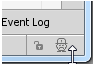
如果你对自己的编程能力很有自信，可以单击它以关闭代码检查。
然而如果你希望对整个工程进行代码检查以提高代码质量，选择Code→Inspect Code，在Inspection tool window显示代码检查结果：
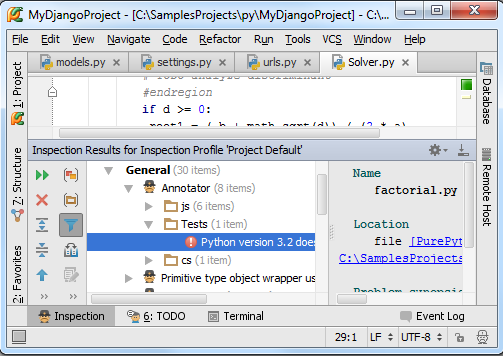
更多信息参见Syntax highlighting and error indication。
25、创建高质量代码
详见Code Quality Assistance Tips and Tricks, or How to make your code look pretty?
26、浏览文档信息
Pycharm有一下几种浏览文档的方式：
- Quick definition
- Quick documentation
- External documentation
- Parameter info
- Error description
这些方式都有直接的菜单命令相对应，以及快捷键设置：
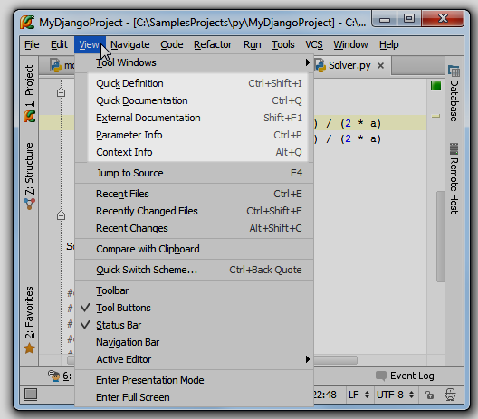
详见Viewing documentation以及 Viewing reference information。
27、搜索与查找
28、源码搜索
最基本的查找方式就是Ctrl+F命令：
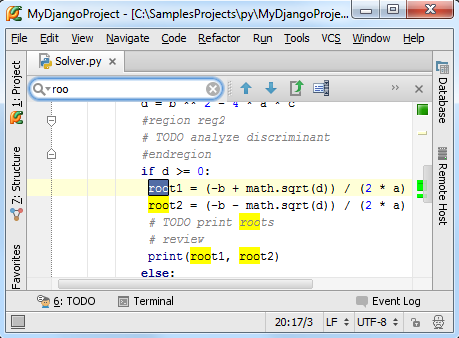
Pycharm运行进行更深层次的查找：特定目录、任何范围、整个工程（Ctrl+Shift+F）：
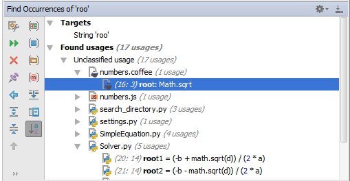
Pycharm还可以查找某个符号的所有应用环境search for usages，按下Alt+F7，或者使用快捷菜单的Find Usages命令：
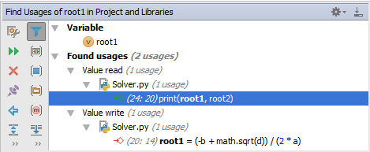
还有其他类似的命令：Ctrl+F7实现跳转；Ctrl+Shift+F7以代码着色的方式浏览Usages；Ctrl+Alt+F7以弹出窗口的形式搜索整个工程。
可以通过中间键单击或者Ctrl+B跳转到对应声明。
Ctrl+N：按名称快速查找一个类；Ctrl+Shift+N：按名称快速查找一个文件；Ctrl+Shift+Alt+N;按名称快速查找一个符号，这些查找均可以使用名称通配符。
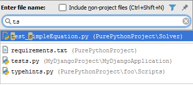
29、IDE控件搜索
我们这里只是简要介绍。以switcher为例，按下Ctrl+Tab显示switcher，按住Ctrl不放，使用Tab键或者方向键来滚动到目标位置：
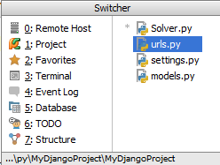
如果你选择一个IDE组件，然后想在其他组件中浏览它，使用Select Target（Alt+F1）：
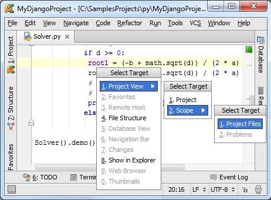
最后通过Esc键返回编辑框。
30、命令搜索
可以通过简单的命令搜索invoke it by name来找到并使用相应的命令（不使用主菜单）。按下Ctrl+Shift+A，输入对应字母：
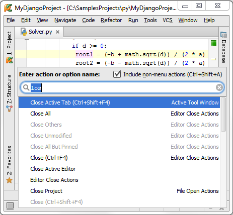
注意你可以在这里搜索主菜单中并不包含的命令，只需再次按下Ctrl+Shift+A即可。
31、搜索导航任意位置
按两下Shift，或者单击主工具栏右端的按钮，打开Search everywhere对话框，在这里面可以查找任何内容。
更多信息参见 Exploring navigation and search，Navigating through the source，Searching through the source code。
32、重构代码
Pycharm建议根据当前代码环境进行重构。
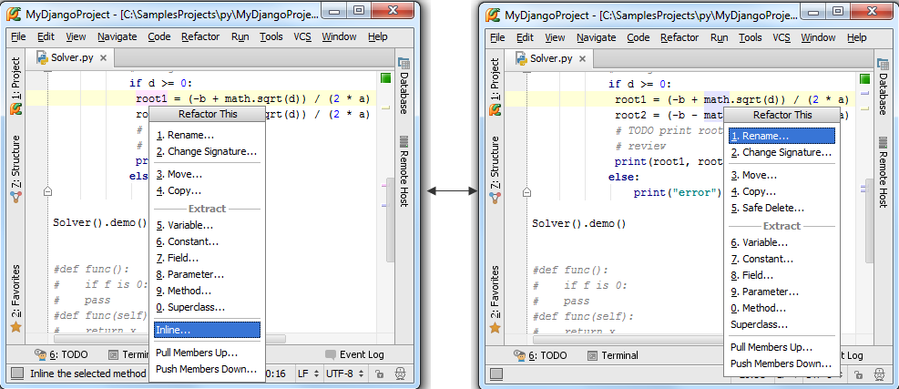
33、运行、调试、测试程序
34、运行代码
通过右键快捷菜单或者Ctrl+Shift+F10快捷键运行代码，如果想使用其他配置信息来运行，需要在主菜单栏中进行选择，然后按下Shift+F10。
详情参考 Code running assistance以及Running。
Pycharm允许远程调试运行 virtual machine and Vagrant boxes。
35、REPL控制台窗口
在Tools菜单下，选择加载Python或者Django控制台的命令。Pycahrm控制台能够高亮显示代码、拼写提示、显示历史命令（Ctrl+Up/Down）
Pycharm也可以将编辑器中的代码放到控制台中运行。选中代码，然后按下Alt+Shift+I快捷键（也可以使用快捷菜单中的命令），更多信息参见REPL - running an interactive console以及Working with consoles。
36、本地终端
选择Tools→Open Terminal的主菜单命令，进入命令行操作模式：
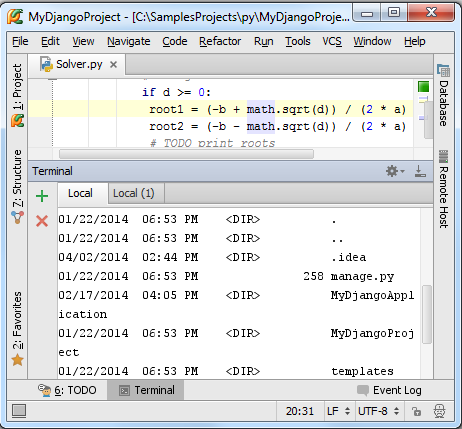
更多信息参见product documentation。
37、调试
调试方法很简单，选择待调试脚本，指定配置文件，按下Shift+F9。
选择运行/调试配置文件的快捷键：Alt+Shift+F10/ Alt+Shift+F9
更多信息参见 Debugger、Breakpoints、Debug run以及Debugging。
38、测试
Pycharm提供如下测试途径：
（1）创建测试类
（2）指定测试用的配置文件
（3）运行/调试测试类
（4）查看结果
Pycharm支持以下主流的Python测试框架： Unittest, Doctest, Nosetest, py.test 和 Attest，并预先设定好了相关配置文件。
更多信息参见Creating and running a Python unit test、Unit tests、Testing。
39、远程操作
首先，将本地脚本文件上传至远端服务器，具体参见Configuring Synchronization with a Web Server。
接下来就可以远程调试运行相关文件了。具体参见compare local and remote folders, and synchronize local copy with that deployed on the server
40、数据库以及SQL支持
Pycharm在数据库方面提供了相关支持。一旦你获得了某个数据库的权限，你就可以借助Pycharm，利用已有许可证书向其中存储更多相同格式的数据源。Pycharm在数据连接过程中提供帮助。
更多信息参见 product documentation
41、多编程语言支持
Pycharm支持Python、JavaScript、 CoffeeScript、HTML、XML等编程语言。其强力的代码助手能够满足各种编程语言的需求。
同时Pycharm还支持JavaScript的代码调试，详见 JavaScript-Specific Guidelines以及Debugging JavaScript with PyCharm
42、大功告成
这是Pycharm的俗称手册，简要介绍了其各个特征，方便大家快速入门，请开始实践吧。